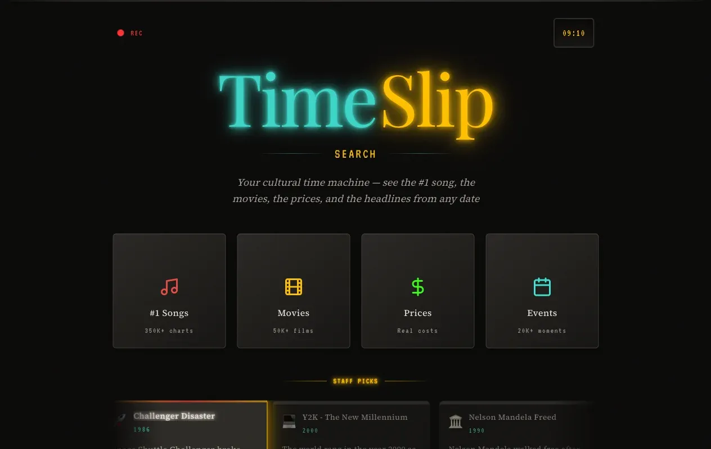
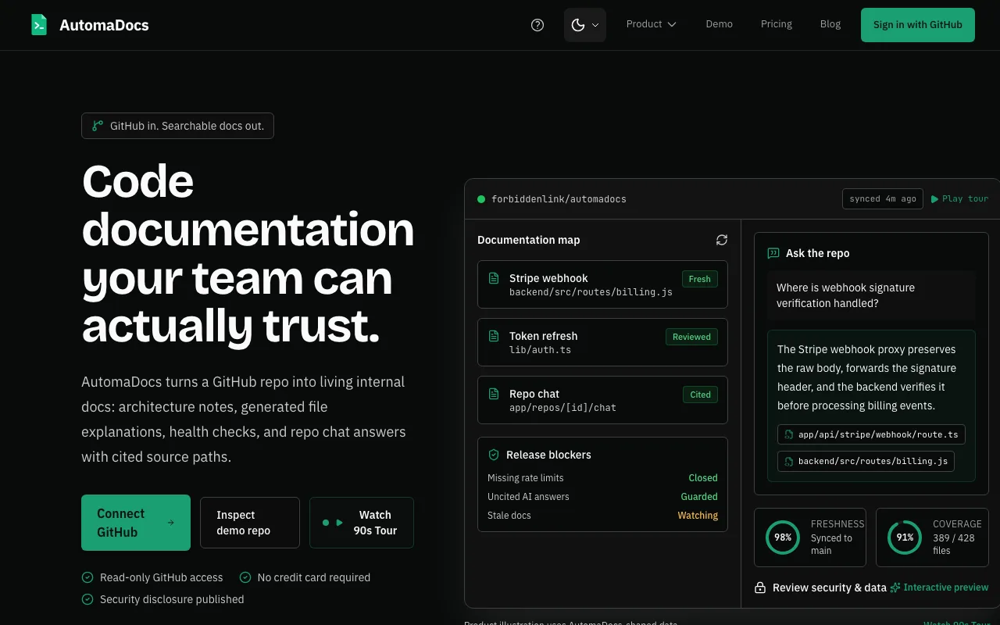

Work
88 projects since 2023. Eight are selected below with full case studies; the rest are in the archive, one sentence each.
Selected
8 projects
Security Readiness Platform
- system
- Dynamics 365, Dataverse, Next.js 16
- status
- In production
- screens
- Private: client confidential
Security Readiness Platform
A cybersecurity-readiness assessment platform, live in production for a nonprofit.

TimeSlipSearch
A conversational AI agent searching 420,000 pop-culture records in plain language.
Craft CMS Ecosystem
- stack
- PHP, Twig, Craft CMS, MCP
- scale
- 11 client sites in production
- screens
- Client sites, not shown
Craft CMS Ecosystem
Eleven live client websites with custom MCP tooling and a shared component system.

AutomaDocs
A documentation SaaS built on retrieval-augmented generation, with tiered Stripe billing.
4 more selected: Specter, Trace, hq, HireReady.(prototype shows 4 of 8)
Archive
Everything else, newest first
| Project | Year | What it is | Category |
|---|---|---|---|
| MCP Server Studio | 2026 | Visual builder for Model Context Protocol servers on a drag-and-drop React Flow canvas. | AI |
| UCP Guard | 2026 | Uptime monitoring SaaS for emerging commerce-protocol endpoints. | Full-stack |
| Critter Vale | 2026 | Browser-based 3D creature-collector built with Three.js. | Experiments |
| Chronicle | 2025-26 | Local-first AI agent observability platform built in Rust. | AI |
| Kindred | 2025-26 | Premium knowledge workspace with native AI and real-time collaboration via Yjs CRDTs. | Full-stack |
| ContradictMe | 2025-26 | AI-powered debate and critical thinking trainer that fights echo chambers. | AI |
| Rocket Vitals | 2025-26 | Scan-first website QA tool that crawls up to 500 pages and runs 200+ checks. | Dev tools |
| Finance Quest | 2024-26 | Financial literacy platform with 17 chapters, 30+ calculators, and spaced-repetition learning. | AI |
| StanceStream | 2024 | AI policy debate platform built for the Redis AI Challenge 2025. | AI |
| MCP Wrapper | 2024 | Model Context Protocol tooling built during an engagement with Flo Labs. | Dev tools |
No projects match that search. Try a technology name, such as "Next.js", or clear the filters.